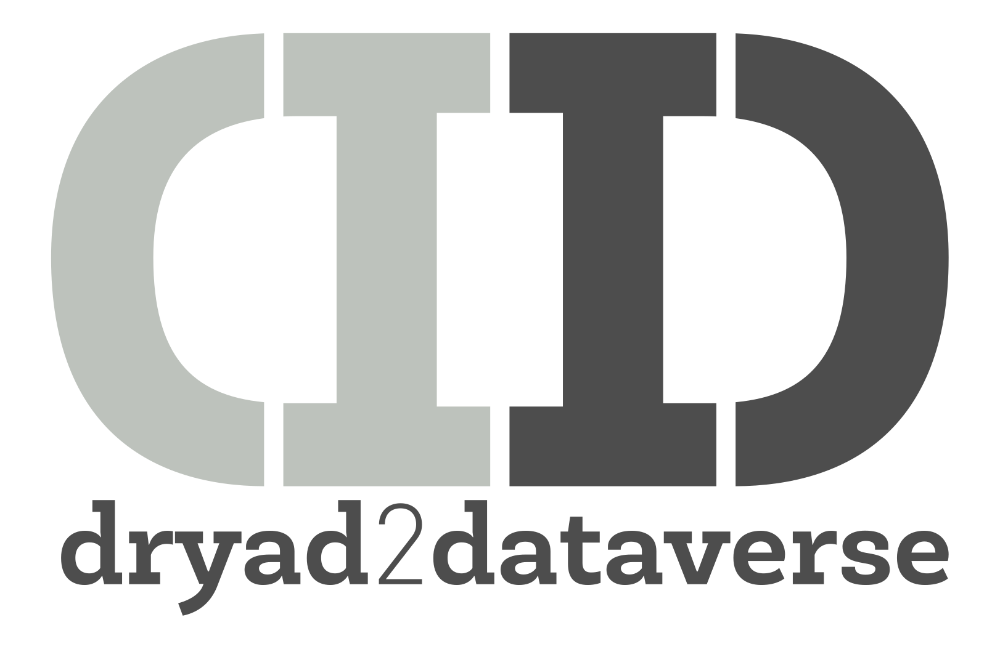

¶Zero effort migrations¶
If you can edit a text file, you can move material from a Dryad repository to a Dataverse repository.
Quick start¶
If you don’t have pipx, install it.
pipx install dryad2dataverse
dryadd
Fill in the newly created configuration file with your information. Then you’re set. All you need type is six characters:
dryadd
Features¶
- Dryadd will run on just about anything. No dedictated server is required. If your platform can run Python, it can run dryadd1.
- Setup is easy, requiring editing only a single file with your institution’s information.
- All transfer information is held in a single SQLite database, so you can easy move between machines.
- Dryadd handles updates to existing material so that you don’t have to worry about it.
- Dryad2dataverse for Python can be easily incorporated into other products if you need a custom solution.
- It’s free and open source.
1 Assuming you have enough storage